| 日付 | 2025年3月22日（土） |
|---|---|
| 山域 | 御坂･天子山塊 |
| メンバー | 単独 |
| 山行形態 | 日帰り |
| アクセス | 電車、バス |
| ルート (Map) | 精進バス停 (9:55) - (10:36) 女坂峠 - (11:06) 三方分山 - (11:40) ヌケド峠 - (11:56) 新八坂峠 - (12:44) 地蔵峠 - (12:59) 大平山 - (13:54) 蛾ヶ岳 - (14:39) 大畠山 - (14:55) 四尾連湖 - (15:08) 四尾連峠 - (16:08) 大門碑林公園 - (16:21) 市川本町駅 |
蛾ヶ岳は「ひるがたけ」と読む。
ひるがたけと名の付く山は3つ知っていて、蛭ヶ岳と日留賀岳は登ったことがある。
この蛾ヶ岳は御坂山塊の西端にあり、人の訪れが少ない山である。
蛾ヶ岳を経由して富士山麓と甲府盆地をつなぐロングルートは以前から歩いてみたいと思っていた道であり
暖かな春の一日に歩いてみることにする。
今回は河口湖駅まで来るのに高速バスを利用してみる。
予約が必要、到着時間が読めないのが難だが、乗り換えがないので楽だ。
中央道は混雑していたが、10分程度の遅れでちゃんと到着した。
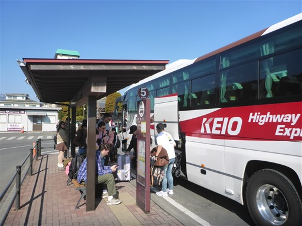
今日は富士山がきれいに見える。
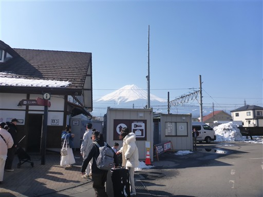
高速バスは間髪おかず次々とやってくる。一体どこからやってくるのだろう？
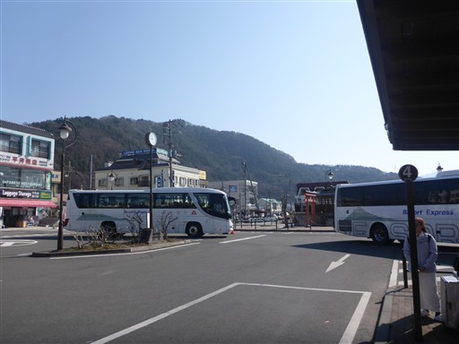
そして駅前は大混雑。なんと半分は外国人だ。
河口湖駅に来るのは2009年以来。駅の風景は大きく様変わりしている。
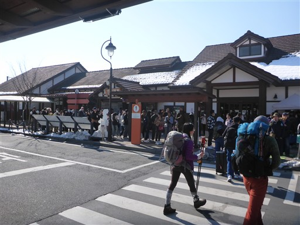
ホイールローダーが駐車場に雪をばらまいている。
雪を早く溶かすためだろうか？
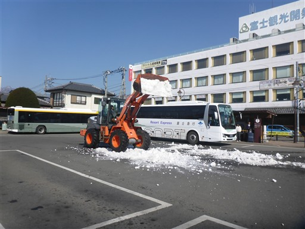
路線バスに乗って精進バス停に到着。標高910m。
路線バスも外国人が多かった。あちらこちらで乗り降りがあり、予定の15分遅れで到着。
もう10時前だ。逆ルートだと8時半から登り始められるのだが、体力的に楽な西進ルートを今回は選んだ。
それでも目標の電車に乗るためには相当速く歩く必要があり、15分の遅延は結構痛い。
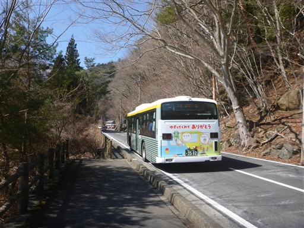
精進湖が目の前に見える。8年前には目の前の広場に車を停めて子供たちと三方分山に登った。
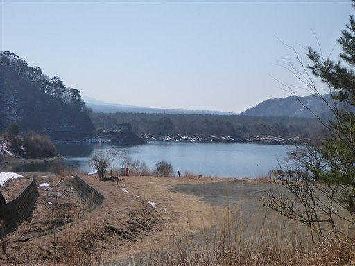
8年前と同じ道を今回は一人で歩く。
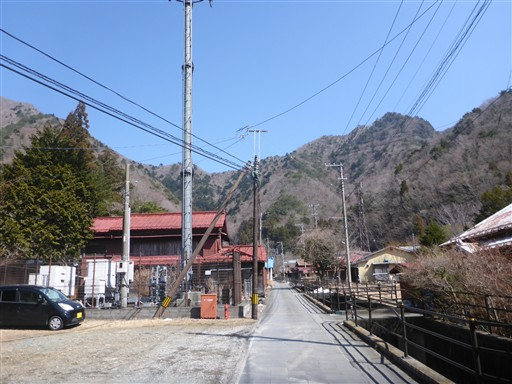
精進諏訪神社に立ち寄る。
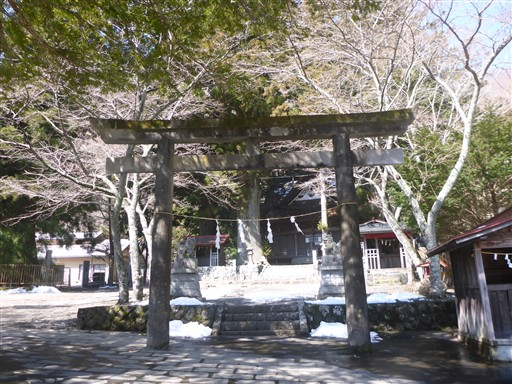
立派な社殿だ。
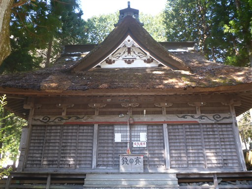
この神社に立ち寄ったのは、精進の大杉を見学するため。
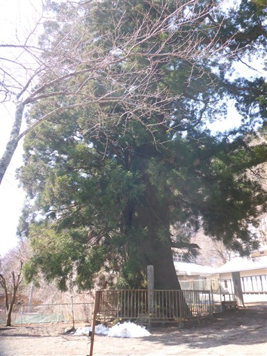
国の天然記念物に指定されている巨木だ。
樹齢は1200年、根元の周囲12.6m。
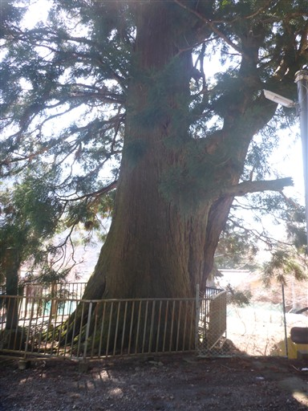
登山道は登り始めから雪が積もっている。
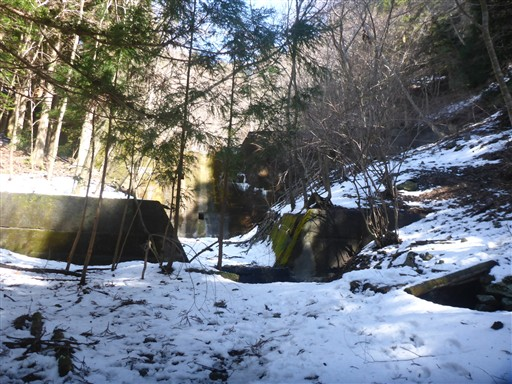
雪が残る明るい道。数は少ないがチラホラと登山者を見かける。
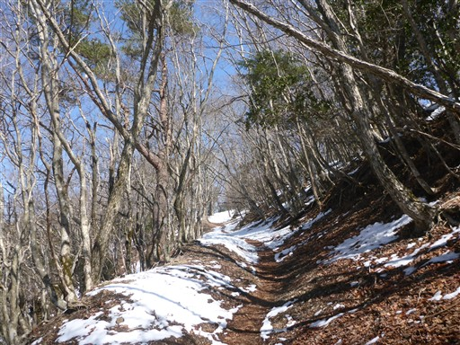
阿難坂に到着。
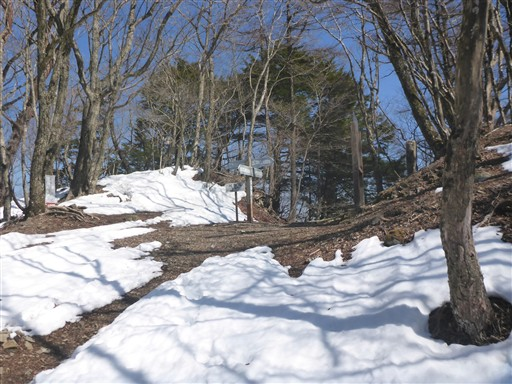
ここからは尾根道だ。
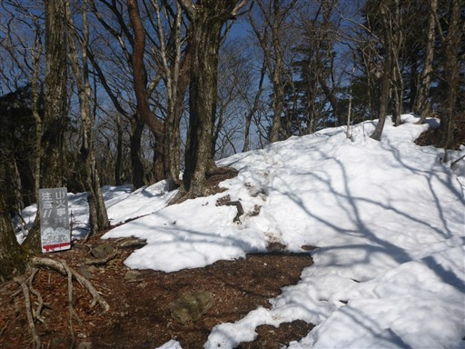
雪の残る尾根道を歩いていく。
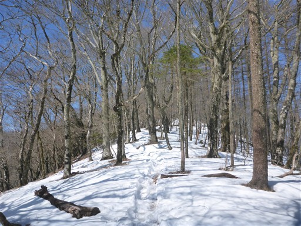
三方分山に到着。標高1421m。
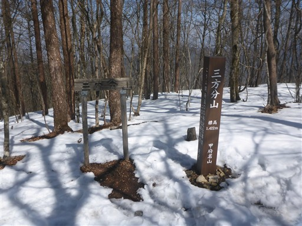
山頂には雪だるまが作られている。
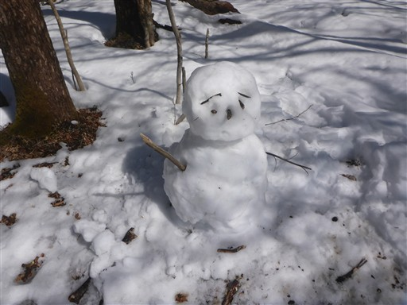
一角のみ木が切り開かれていて、富士山が見えるようになっている。
若干霞んでいるが良い景色だ。

ここから北上する道はなんと踏み跡がない。
三方分山までの踏み跡の少なさからそんな予感はしていたが、ちょっと誤算だ。
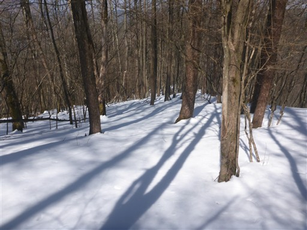
雪が波打つ尾根道。そもそも雪があることすらあまり想定できておらず
ロングスパッツなどの雪山装備がない。
雪は脛くらいの深さで、少々雪が靴に入ってくるが気にせず歩くことにする。
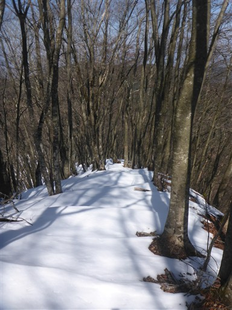
ヌケド峠から釈迦ヶ岳を経由せず、ショートカットする道を選択。
釈迦ヶ岳に登るには標高差100mを登る必要があり、時間的にちょっときつい。

沢沿いは雪が流れた跡がありちょっと嫌だが、
稜線直下でこの積雪量であれば雪崩が発生することはないだろう。
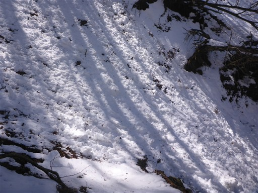
太ももくらいの深さの雪を乗り越え車道に降り立つ。
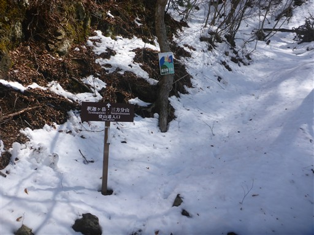
ここはほっと一息できる場所。
釈迦ヶ岳を迂回する道はただのトラバース道かと思っていたが車道だったのは意外だった。
スキップした釈迦ヶ岳がちょっと心残りだ。
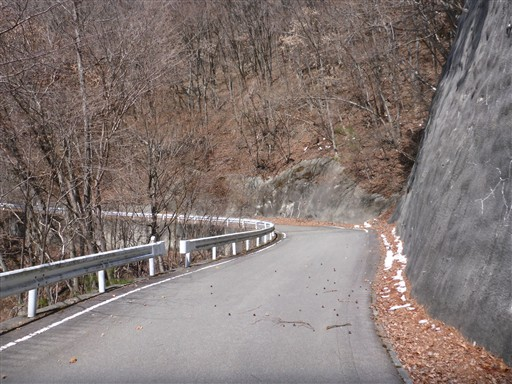
車道を歩いて釈迦ヶ岳から下山してきた道と合流する。
不安定そうな梯子が立てかけられている。
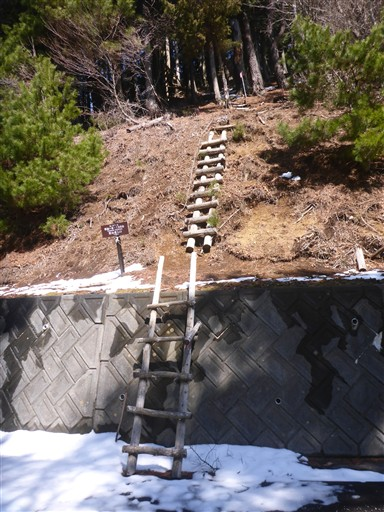
ここから再び尾根道を歩く。
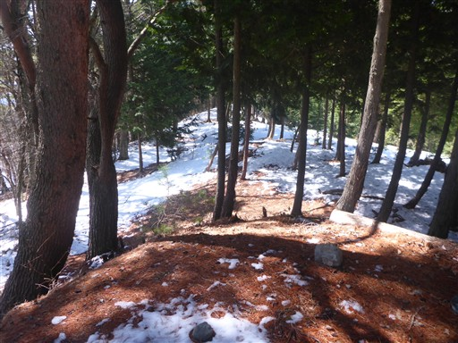
動物の足跡がある。登山道の結構長い区間、途切れることなくついている。
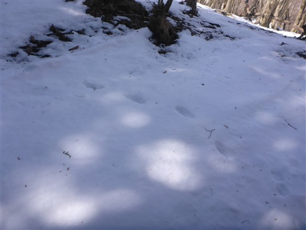
雪の尾根道は続く。雪のせいで全くスピードがあがらない。
傾斜の緩い道は雪のあるなしでスピード差が大きい。
目的の15:53の電車には到底間に合わなさそうで、次の16:32をターゲットに変更する。
それでもギリギリになりそうだ。
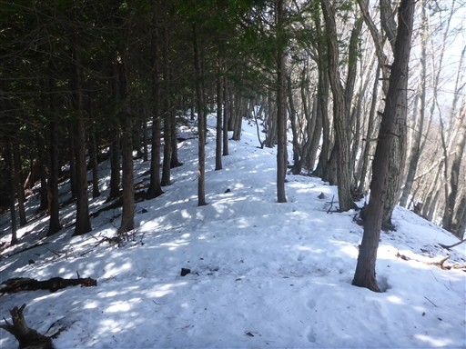
標識に初めて蛾ヶ岳の文字が出てくる。目的地にだいぶ近づいてきた。
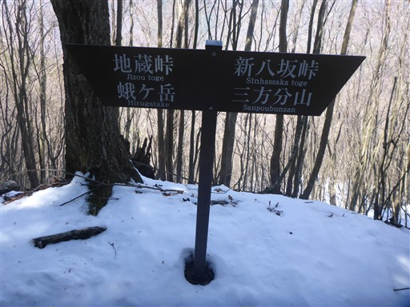
雪がまだら模様に残っている。
雪のある場所とない場所で歩き方が変わるので、これはこれで歩きにくい。
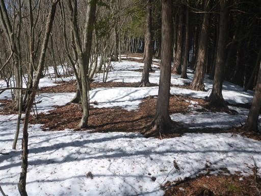
広い尾根。新緑のころにのんびり歩くのに良さそうなところだ。
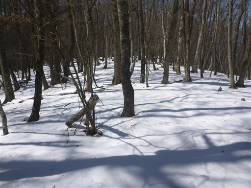
栂の峠（地蔵峠）に到着。
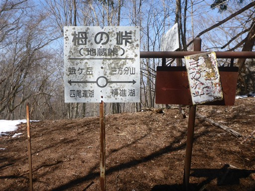
峠の名前の通り、栂の大木があるが、地蔵は見当たらない。
樹齢500年と記載されている。だいぶ傷んでいるように見えるが、まだ生きているのだろうか？
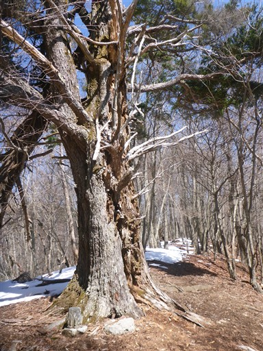
一登りで大平山到着。標高1187m。
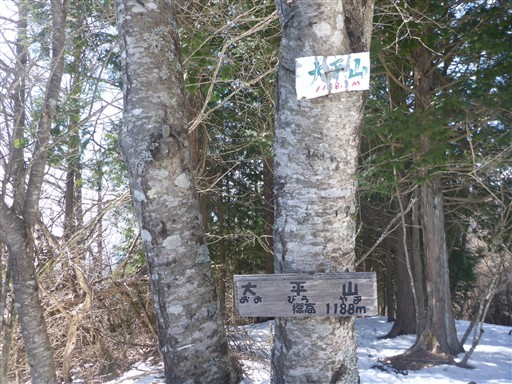
小さな山頂かと思ったら、そこそこ開けた山頂だ。
そして、逆方向から歩いてきた足跡が見える。ここから先は少し楽ができそうだ。
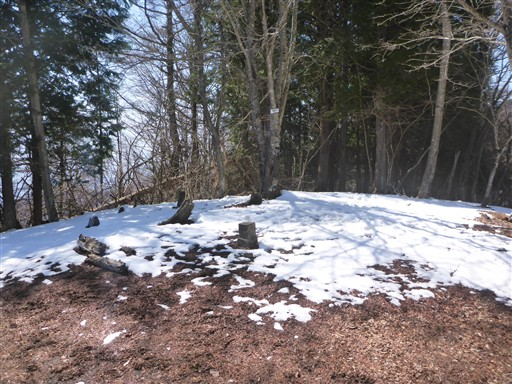
この山頂も富士山の方は切り開かれている。
三方分山より富士山から遠いのだが、こちらからの方がくっきりと富士山が見える。
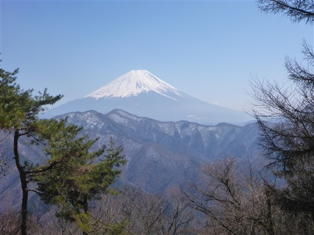
だいぶ雪は減ったが、それでも踏み跡がないよりある方がありがたい。
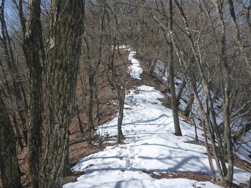
この附近は鴨の猟場と書かれているが、こんなところに鴨がいるのだろうか？
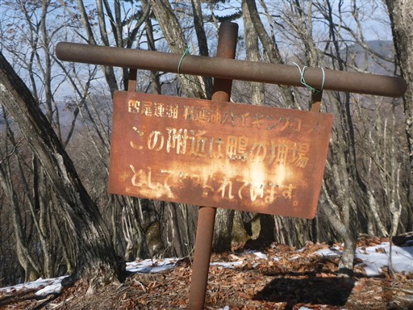
目の前に目指す蛾ヶ岳が見えてきた。
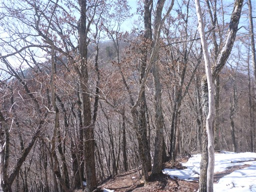
左には立派な山容の天子山塊が見える。最高峰の毛無山の辺りだ。
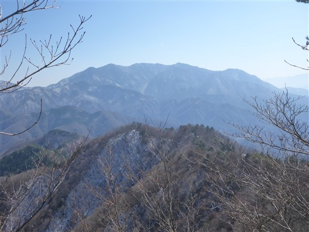
蛾ヶ岳山頂に到着。標高1279m。
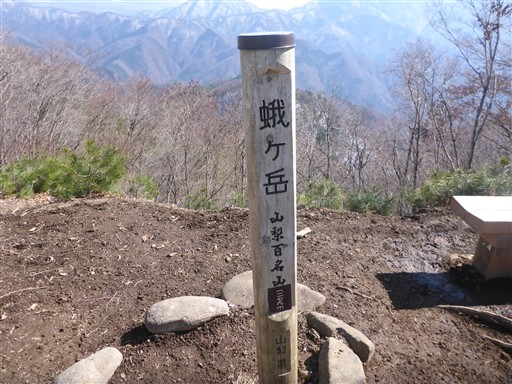
山頂からは素晴らしい景色が広がる。富士山が絵のような美しさだ。
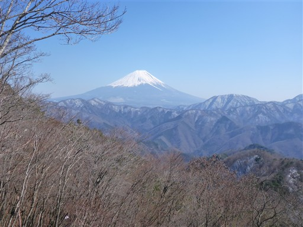
反対方向は南アルプス。白峰三山が見えている。
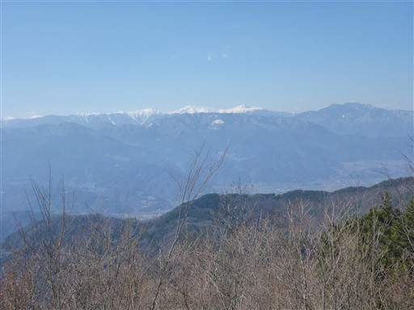
甲府盆地と、その奥に八ヶ岳。こちらはかなり霞んでいる。
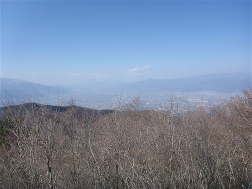
山頂には小さな石祠と小さな地蔵が祀られている。
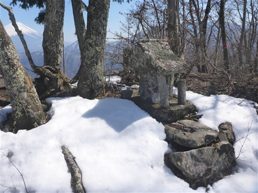
時間がないので少しの休憩で山頂出発。雪のトラバース道も踏み跡があると歩きやすい。
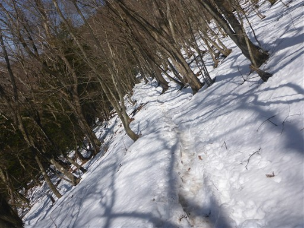
細い尾根道。
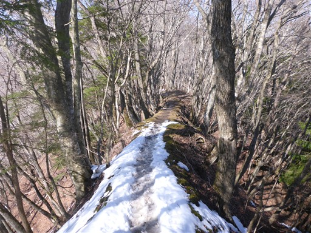
大畠山に到着。標高1117m。
甲府盆地方面の展望が広がる。
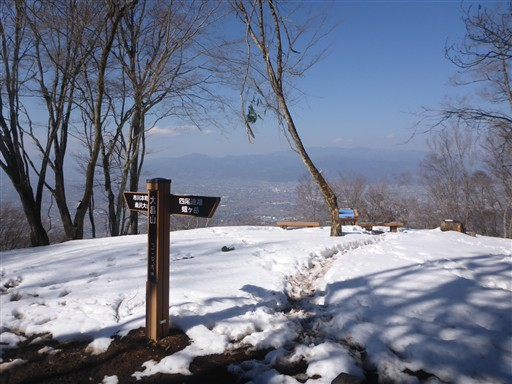
四尾連湖を上から眺められるかと期待して来たのだが、
電波塔がありこちら側の展望は開けない。
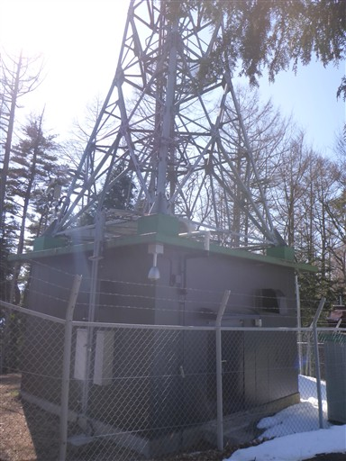
急斜面を降って四尾連湖畔までやってくる。
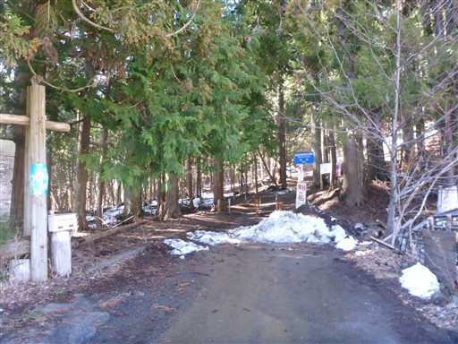
四尾連湖が見えてきた。今回の山で行きたかったのは蛾ヶ岳とこの四尾連湖。
山の中にある割には比較的大きな湖だ。
標高880mにある丸い形の湖。火口湖のように見えるが、地滑りによる堰止湖らしい。
流入する川も流出する川もない。
湖畔には水明荘と龍雲荘という2件の宿がある。
ここまでは車で来れるのだが、ほとんど人がおらず静かな空間だ。
四尾連湖を後にする。四尾連湖を取り囲む尾根まで登る必要がある。
本日最後の登りだ。
四尾連峠まで上がってくる。あとは降るのみだ。

標高はだいぶ下がったが、北側斜面はまだ雪がある。
沢に架かる立派な橋。

まっすぐな沢筋には雪が積もっている。

このテントはいったい何だろう？
木が切り開かれていて展望が広がる。
甲府盆地がだいぶ近くなってきた。薄っすらと八ヶ岳が見える。
なぜか水たまりが木で囲われている。誤って落ちないためだろうか？
深くえぐられた登山道。
下山。
下山地点にある大門碑林公園。入園料が必要なようだ。
田舎町にある結構謎な公園だ。
あとは駅に向かって短い車道を歩くのみ。

市川本町駅に到着。標高250m。
この駅、券売機もSuicaをタッチする場所も、何もない。身延線のローカル駅だ。
今回は雪のあるロングルートを、時間に追われながら歩くという、結構きつい山行だった。
様変わりした河口湖駅、山頂からの富士山、静かな四尾連湖と、いろいろと見所はあった。
今度は新緑の季節に四尾連湖からのんびりと歩いてみたい。